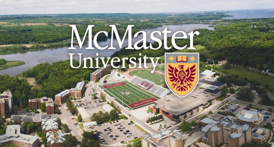
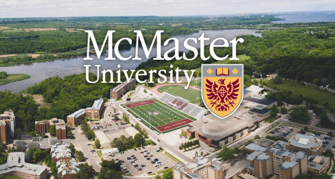

Ward 1, also known as the Chedoke-Cootes area is an urban ward, situated in the west end of Hamilton below the Niagara Escarpment (often referred to as the Mountain).
Bordered by the Niagara Escarpment to the south, Queen Street to the east, Hamilton Harbour and Cootes Paradise to the north and a green corridor running from Cootes Drive along the border of what was formerly the City of Hamilton and the Town of Dundas. This ward is divided by the Highway 403 corridor running from the north-east to south-west.
Home to Dundurn National Historic Site, McMaster University (part of Hamilton Health Sciences), Chedoke Civic Golf Course.
Located within the Hamilton Conservation Authority watershed. 2018 Ward Boundary Adjustments:No change, area remained the same.
Ward 2, also known as the Downtown area is an urban ward situated in the centre of the city below the Niagara Escarpment (often referred to as the Mountain). Bordered by the Escarpment to the south, Hamilton Harbour to the north, Queen Street to the west and Wellington Street North to the east connecting to Claremount Access.
Ward 2 is considered the City’s downtown and is home to City Hall, Jackson Square, Gore Park, First Ontario Centre, the Hamilton Farmer’s Market, St. Joseph’s Hospital, the Art Gallery of Hamilton and Hamilton Place.
In the north section of Ward 2, there is the Harbourfront and Pier 4 Parks, as well as the Hamilton Waterfront Trail which links Wards 1 and 2. Ward 2 is Hamilton’s smallest ward, and is located within the Hamilton Conservation Authority watershed.
2018 Ward Boundary Adjustments: Decreased in both area (-11%) and population (-9%). The percentage change shows the gain or loss of land/population for each ward.
Ward 3, also known as Hamilton Centre is an urban ward situated in the lower city below the Niagara Escarpment (often referred to as the Mountain). Bordered by the Escarpment to the south, Hamilton Harbour to the north, Ottawa Street to the east, and Wellington Street North to the west, connecting to Claremount Access.
Approximately 1/3 of this ward is comprised of industrial and commercial land including U.S. Steel Canada and ArcelorMittal Dofasco. It is also home to Hamilton General Hospital, St. Peter’s Hospital (both part of Hamilton Health Sciences), Tim Hortons Field and Gage Park. Located within the Hamilton Conservation Authority watershed.
2018 Ward Boundary Adjustments: Increased in both area (+5%) and population (+9%).The percentage change shows the gain or loss of land/population for each ward.
Ward 4, also known as the East Hamilton area is an urban ward situated in the lower city below the Niagara Escarpment (often referred to as the Mountain).
Bordered by the Escarpment and King’s Forest Golf Course to the south, Hamilton Harbour to the north, Ottawa Street to the west and the Red Hill Valley/Expressway to the east. Approximately 1/3 of this ward is comprised of industrial and commercial land including ArcelorMittal Dofasco. Ward 4 is also home to the Centre on Barton, and the Pipeline Walkway. Located within the Hamilton Conservation Authority watershed.
2018 Ward Boundary Adjustments: Increased in both area (+23%) and population (+12%). The percentage change shows the gain or loss of land/population for each ward.
Ward 5, is located just east of the Redhill area is an urban ward situated in the lower city below the Niagara Escarpment (often referred to as the Mountain).
Bordered by the Escarpment to the south, the Red Hill Valley / Expressway to the west and the waters of Lake Ontario and Hamilton Harbour to the north. The eastern ward boundary follows along Gray Road from the escarpment to Lake Ontario. Ward 5 also includes the beach strip up to the Canal Bridge and the ship canal which separates the cities of Hamilton and Burlington. It is also home to St. Joseph’s Community Health Centre, Eastgate Square, Battlefield Park, Confederation Park and King’s Forest. Located within the Hamilton Conservation Authority watershed.
2018 Ward Boundary Adjustments: Decreased in area (-5%) but increased in population (+11%). The percentage change shows the gain or loss of land/population for each ward.
Ward 6, also known as the East Mountain area is primarily an urban ward situated in the east end of Hamilton on the Niagara Escarpment.
Ward 6 runs along the north and east edge of the Escarpment and bordered on the east by Upper Red Hill Valley Expressway, while the southern limit follows along the hydro corridor. The western limits of Ward 6 mainly run along Upper Gage Avenue (between the LINC and the escarpment), but veers west to Upper Sherman Avenue from Rymal Rd. East to the LINC. Ward 6 is divided by the Lincoln M. Alexander Parkway and includes the interchange with the Red Hill Valley Parkway. It has a pocket of light industrial and commercial land in the southeast corner and is home to the Mount Albion Conservation Area and Bernie Arbour Stadium. Located within the Hamilton Conservation Authority watershed.
2018 Ward Boundary Adjustments: Increased in area (+1%) but decreased in population (-4%). The percentage change shows the gain or loss of land/population for each ward.
Ward 7, also known as the Central Mountain area is an urban ward, situated in the centre of Hamilton on the Niagara Escarpment.
Bordered by the Escarpment to the north and Upper Wellington Street to the west. The southern border runs along the hydro corridor, while its eastern border runs from the edge of the Escarpment along Upper Gage Road to the LINC, then west along the highway to Upper Sherman, and down to Rymal Rd. East, ending at the hydro corridor. Ward 7 is divided by the Lincoln M. Alexander Parkway. Home to Limeridge Mall, the Sackville Hill Senior’s Centre, Sam Lawrence Park, Henderson General Hospital, and the Juravinski Cancer Centre (both part of Hamilton Health Sciences). Located within the Hamilton Conservation Authority watershed.
2018 Ward Boundary Adjustments: Decreased in both area (-26%) and population (-22%). The percentage change shows the gain or loss of land/population for each ward.
Ward 8, located within the West/Central Mountain area is an urban ward, situated in the west end of Hamilton on the Niagara Escarpment.
Bordered by the hydro corridor to the south, the Escarpment on the north, Upper Wellington Street to the east, and Garth Street to the west. Ward 8 is divided by the Lincoln M. Alexander Parkway. Home to Mohawk College of Applied Arts and Technology, Chedoke Hospital, St. Joseph’s Mental Health and Wellness Resource Centre and the Chedoke Rail Trail which connects Wards 1 and 8. Located within the Hamilton and Niagara Peninsula Conservation Authorities watershed.
2018 Ward Boundary Adjustments: Decreased in both area (-28%) and population (-34%). The percentage change shows the gain or loss of land/population for each ward.
Ward 9, known as Upper Stoney Creek sits above the escarpment.
Bordered by the hydro corridor and South Townline Rd to the south, the Niagara Escarpment to the north, the municipal city limits to the east just past 11th Rd and Upper Red Hill Parkway to the west. Home to Heritage Green Sports Park, the Eramosa Karst region and Felker’s Falls Conservation area among other locations of interest. Upper Centennial Parkway divides Ward 9 from its urban and rural portions, which are approximately 19% and 81% in land area respectively. Located within the Hamilton and Niagara Peninsula Conservation Authorities watershed.
2018 Ward Boundary Adjustments: Increased in area (+280%) but decreased in population (-5%). The percentage change shows the gain or loss of land/population for each ward.
Ward 10, also known as the Lower Stoney Creek area is primarily an urban ward situated below the Niagara Escarpment with an industrial and commercial corridor south of the Queen Elizabeth Way.
Bordered by the lower edge of the Escarpment to the south, Lake Ontario to the north, the city municipal boundary to the east just past Fifty Rd, and Grays Road to the west. Home to Mohawk College STARRT Institute and a section of the Hamilton Waterfront Trail. Located within the Hamilton Conservation Authority watershed.
2018 Ward Boundary Adjustments: Increased in both area (+155%) and population (+54%). The percentage change shows the gain or loss of land/population for each ward.
Ward 11, general comprises the municipality of Glanbrook.
Home to Lake Niapenco, the Binbrook Conservation Area, and the John C. Munro Hamilton International Airport. It is also home to two major residential settlement areas, including Mount Hope and Binbrook, and is approximately 90% rural in area. Located mainly within the Niagara Conservation Authority watershed.
2018 Ward Boundary Adjustments: Decreased in both area (-28%) and population (-44%). The percentage change shows the gain or loss of land/population for each ward.
Ward 12, also known as the Ancaster area and extends into the west Flamborough rural area.
Home to Redeemer University College, as well as part of the Dundas Valley Conservation Area. There are several small to medium commercial and light industrial sections, including the Meadowlands Power Centre and the Ancaster Business Park. It is also home to several rural settlements including Copetown, Sheffield, Lynden and Jerseyville. Located mainly within the Hamilton and Grand River Conservation Authorities watershed, with some Niagara Region to the east.
2018 Ward Boundary Adjustments: Increased in both area (+171%) and population (+11%). The percentage change shows the gain or loss of land/population for each ward.
Ward 13, which includes primarily the Community of Dundas is an urban and rural ward comprised of the former Town of Dundas. There was a substantial expansion for Ward 13 which extended into a large rural portion of Flamborough, extending from Greensville to the city limits.
It is situated in the Dundas Valley and is bordered by the Dundas municipal boundary to the east, Hwy. 8 along the southern border, Hamilton city limits along Gore Rd to the west, and Hwy.6 and Milgrove Sideroad to the north. Home to the African Lion Safari, Westfield Heritage Village, Dundas Valley School of Art, the Dundas Valley Conservation Area, a large section of the Royal Botanical Gardens, and Cootes Paradise. It is also home to several rural settlement areas such as Freelton, Kirkwall, Rockton and Greensville. Located within the Hamilton, Grand River and Halton Conservation Authority watersheds.
2018 Ward Boundary Adjustments: Increased in both area (+972%) and population (+46%). The percentage change shows the gain or loss of land/population for each ward.
Ward 14 is located in the western portion of the Hamilton Mountain..
Bordered by the escarpment to the north, hydro corridor to the south, Garth Street to the east, and the city of Hamilton municipal border to the west, extending beyond Scenic Drive into Ancaster to the 403 and the LINC. Almost 1/2 of Ward 14 is comprised of residential lands, while another substantial percentage is made up of parks and open spaces. Located within the Hamilton and Niagara Peninsula Conservation Authorities watershed.
2018 Ward Boundary Adjustments: Decreased in area (-97%) and increased in population (+114%). The percentage change shows the gain or loss of land/population for each ward.
Ward 15, also known as the Flamborough East area is primarily a rural ward but includes some light industrial and commercial land as well as the urban area of Waterdown.
Home to Spencer Gorge/Webster’s Falls Conservation Area, as well as the Carlisle rural settlement area. Waterdown is considered one of the fastest growing residential areas in Hamilton. Located mainly within the Halton Conservation Authority and some Hamilton Conservation Authority watersheds.
2018 Ward Boundary Adjustments: Decreased in both area (-16%) and population (-4%).The percentage change shows the gain or loss of land/population for each ward.
 
